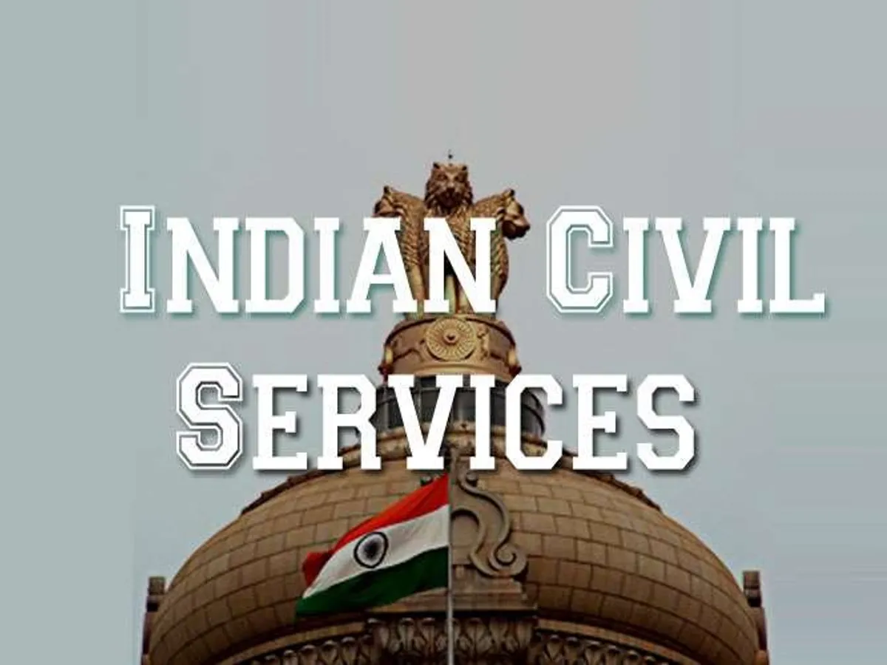

Crack The Code
Learn - Think - Practice - Succeed
Crack The Code
Learn - Think - Practice - Succeed
WHAT ?
The civil service is a collective term for a sector of government composed mainly of career civil servants hired rather than appointed or elected, whose institutional tenure typically survives transitions of political leadership. A civil servant, also known as a public servant or public employee, is a person employed in the public sector by a government department or agency for public sector undertakings. Civil servants work for central and state governments, and answer to the government, not a political party.
WHY ?
Top reasons that make Civil Service a lucrative career option are repay to the nation by serving it with dignity and honor, prestige and glory associated with civil services matches no other career path , Civil Service is the epitome of state power, excellent perks and salary, job security, work life balance, feeling of worth. Prestige, Power, Charm, Glory – Civil Services has it all.
HOW ?
| ELIGIBILITY | |
|---|---|
| Age Limit | 21 to 32 years (must not have touched the 32nd year) |
| Age Relaxation | OBC - 3 years |
| SC/ST - 5 years | |
| PwBD - 10 years | |
| Educational Qualification | Graduation (Bachelor) |
| Number of Attempts | General - 06 |
| OBC & PwBD - 09 | |
| SC/ST - Unlimited | |
| Nationality | Indian Citizens Only |
EXAMS
UPSC
The official examination conducted by the Centre for appointment to the services to the Union
WBCS
The official examination conducted by the State for appointment to the services to the State
NEWS